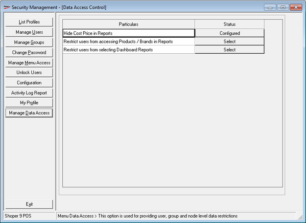
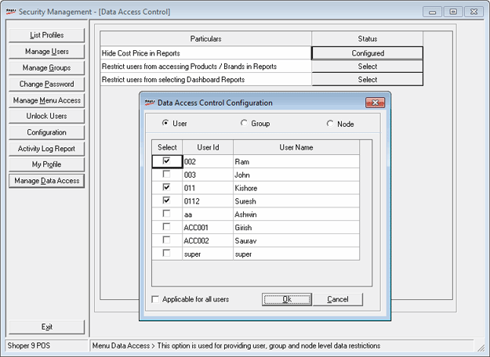

This option is used to configure restrictions for Users /Groups / Nodes from accessing relevant data.
How to reach: Setup > Supervisory Functions > Security Management
On clicking Manage Data Access, the Security Management – Data Access Control window is displayed.

Hide Cost Price in Reports: To hide display of cost price in all relevant reports.
Status: Click to display the Data Access Control Configuration window
Data Access Control Configuration window is displayed.

Select User, Group or Node to display the list of Id’s and Description.
User: Select to set restriction for users.
Group: Select to set restriction for groups.
Node: Select to set restriction for nodes.
Applicable to all users/groups/nodes: Select to apply restriction for all users/groups/nodes.